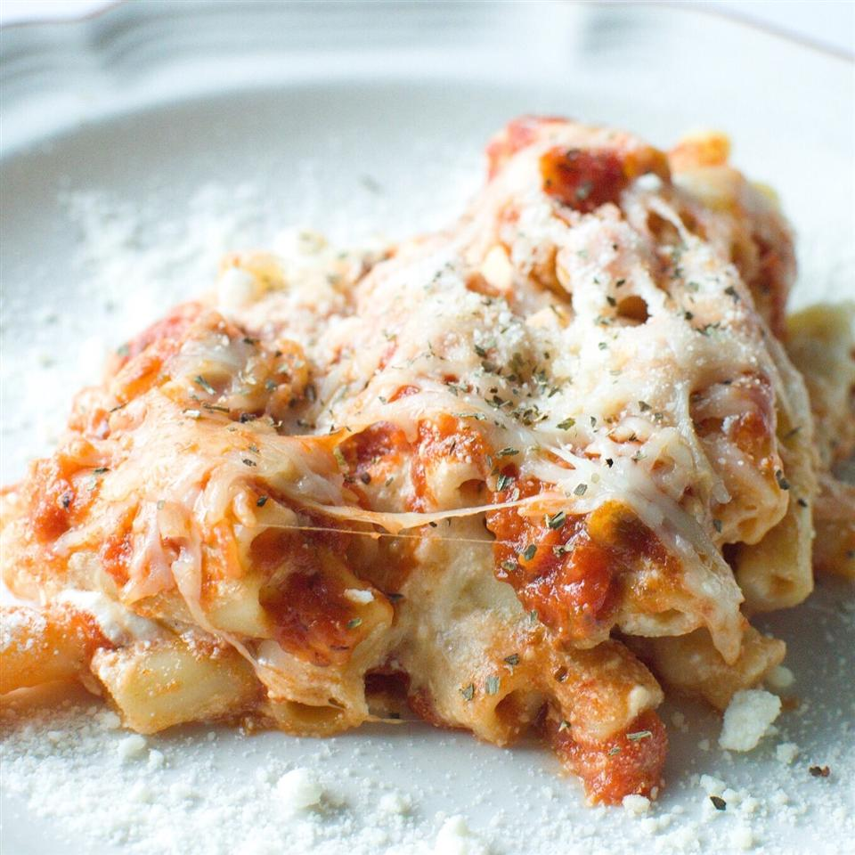

Baked Ziti

Description
Classic Italian-America comfort food! Baked ziti with sausage, tomato sauce, and all kinds of gooey yummy cheeses.
Ingredients
- 1 (16 ounce) package dry ziti pasta
- 1 pound mild italian sausage
- 1 (15 ounce) container ricotta cheese
- 1 egg
- 1 large yellow onion, minced
- 2 teaspoons minced garlic
- 1 teaspoon dried oregano
- 1/2 teaspoon salt
- 1/2 teaspoon ground black pepper
- 1 1/2 (26 ounce) jar spaghetti sauce, divided
- 1 (8 ounce) package shredded italian cheese blend
- 1 teaspoon dried basil (Optional)
Steps
- Preheat an oven to 350 degrees F (175 degrees C). Grease a 9x13 inch baking dish.
- Fill a large pot with lightly salted water and bring to a rolling boil over high heat. Once the water is
boiling, stir in the ziti, and return to a boil. Cook the pasta uncovered, stirring occasionally, until the pasta
has cooked through, but is still firm to the bite, about 8 minutes. Drain well in a colander set in the sink.
- While pasta is cooking, heat a large skillet over medium heat. Add the sausage, and cook and stir until brown,
about 10 minutes. Drain sausage and set aside.
- Stir together the ricotta, egg, onion, garlic, and oregano in a large bowl until well combined. Stir in the
drained pasta, the drained sausage, salt, pepper, and 1/2 jar of the spaghetti sauce; mix well.
- In the prepared baking dish, cover the bottom with 1/3 jar of spaghetti sauce. Layer 1/2 of the pasta mixture,
1/3 jar of spaghetti sauce, and 1/2 of the shredded cheese. Then layer the remaining 1/2 of the pasta, 1/3 of the
sauce, and 1/2 of the cheese. Sprinkle with basil. Cover the dish tightly with aluminum foil.
- Bake in the preheated oven until heated through, about 20 minutes. Uncover; return to the oven and bake until
cheese is melted, 5 to 10 more minutes.